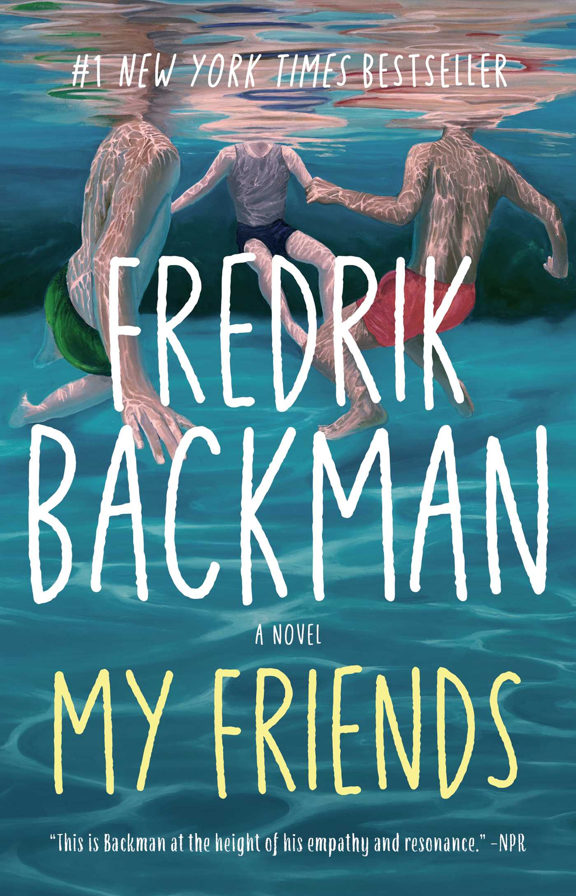
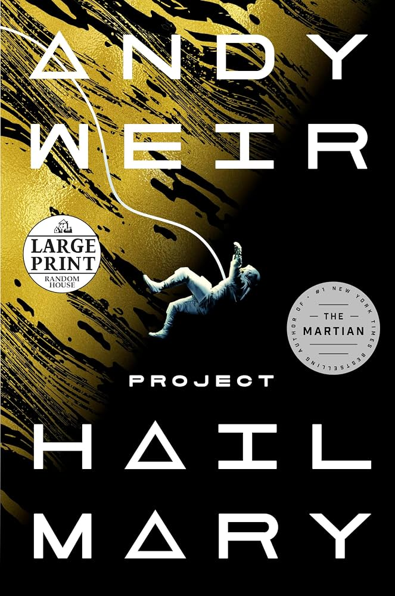

Just finished reading
My Friends
by Fredrik Backman
When I’m not thinking about molecular machines, I’m usually lost in the pages of a novel.

by Fredrik Backman

by Andy Weir. I saw the movie first, and it pushed me to finally read the book.